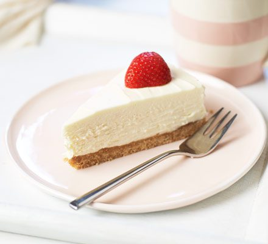

home
White chocolate cheesecake

Make a simple, creamy dessert for a dinner party with very little effort. Pairing this white chocolate cheesecake with fresh fruit offsets the richness
Ingredients:
- 300g digestive biscuits
- 150g unsalted butter, melted, plus extra to grease
- 400g white chocolate, broken into pieces
- 300g full-fat cream cheese (we used Philadelphia)
- 250g mascarpone
- 300ml double cream
- 200g strawberries or raspberries, to serve
Instructions:
- Crush the biscuits in a food processor until completely ground. Add butter and whizz again until you have the desired crumbly consistency.
- Grease and line the base of a 23cm deep, loose-bottomed cake tin. Add the biscuit mixture to the cake tin and pat it flat. Leave to set in the fridge for approximately 30 mins.
- Begin melting the chocolate in a heatproof glass bowl over a small pan of hot water on a low heat. Stir occasionally to prevent sticking. Remove from the heat and leave to cool for 10 mins until barely warm but still liquid.
- Meanwhile whisk the cream cheese and mascarpone together. Add double cream and keep whisking until the mixture is just holding its own shape. Finally, add the melted chocolate and whisk until just combined.
- Spoon the mixture over the cooled and set biscuit base, then smooth the top. Return to the fridge to cool for at least 6 hrs until the topping is set. Finally, decorate with fruit.